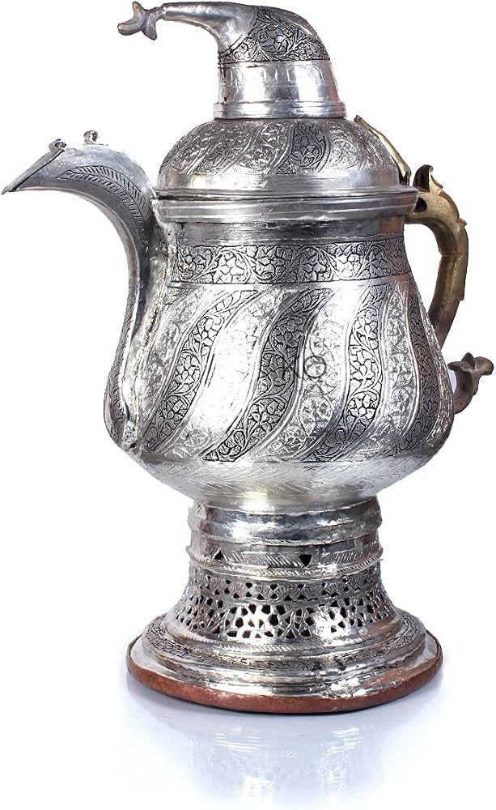

A copper kettle with a fire at its heart. Coals glow in a tube down the middle, kahwa simmers all around it, and every inch of the outside is engraved by hand.
The pattern behind this page is the same language of leaves and almonds cut into a samavar. Nothing on it is stamped or cast; each one passes from craftsman to craftsman in the old copper lanes of Srinagar.
Shaping
The coppersmith beats flat sheet over iron stakes until it swells into the belly, neck and foot.
Joining
Spout, handle, lid and the inner fire tube are fitted and brazed so the body holds water around the coals.
Engraving
The naqash draws nothing first. He cuts vines, leaves and bands straight into the metal, one tap at a time.
Finishing
The piece is tinned inside so it is safe for tea, then polished copper-bright or tinned outside to a silver white.
ChinarThe leaf of Kashmir's great plane tree.
BadamThe almond, known elsewhere as paisley.
Vine bandsRunning scrolls that ring the neck and belly.
JaaliPierced lattice on the foot that feeds air to the coals.
How it is built
A kettle with its own hearth
A samavar needs no stove. The fire sits inside it, so the tea stays hot for hours and can be carried from the kitchen to wherever the guests are.

12345
1Lid and capLifts off to fill the kettle and to feed the fire below.
2SpoutSet high on the shoulder, for a long, clean pour.
3HandleCast brass, kept clear of the hot body.
4BellyHolds the tea, and carries most of the engraving.
5Pierced footDraws in air and lets the ash fall away.
6Fire tubeHidden inside: a copper column packed with live charcoal.
Two finishes
One metal, two faces
Every samavar begins as copper. What you see at the end depends on whether the smith leaves that copper bare or covers it in tin.
Silver
Copper tinned on the outside until it turns a soft silver white. The engraving is cut afterwards, so every line shows dark against the shine.
Spiral bands of fine vine work
Cool, bright surface that suits daily use
Re-tinned every few years to keep its colour
Copper
Left bare and polished, the metal glows red-gold. The work here is deeper and bolder, with a single chinar leaf raised on the belly.
Deep relief engraving you can feel
Warm colour that darkens with age
Brightens again with lemon and salt
In a Kashmiri home
A day around the samavar
In Kashmir the samavar is not brought out for show. It is lit before the house wakes and it is still warm when the last guest leaves.
Dawn
Noon chai and warm bread
The first pot of the day is salted pink tea. Someone walks to the baker and comes back with bread still hot from the oven.
noon chai salt tea · kandur the baker · girda round bread
Afternoon
A cup for whoever comes
A guest is never asked whether they would like tea. Kahwa is poured the moment they sit down, and the cup is filled again before it is empty.
kahwa saffron green tea · khos the small cup it is drunk from
The wedding
Carried down the rows
At a wedding feast the guests sit four to a platter. When the meal is over, samavars are carried along the rows and kahwa closes the evening.
wazwan the wedding feast · trami the platter shared by four
Deep winter
Forty days of cold
Through the hardest stretch of winter the family gathers in one room, each with a fire pot under their cloak. The samavar keeps tea hot for hours without a stove.
chillai kalan the forty coldest days · kangri fire pot · pheran the cloak
Keep scrolling · the day moves on
Brewing
What happens inside
One kettle makes both of Kashmir's teas. Choose one on the card to see what goes in.
Live charcoal is dropped into the fire tube through the top.
Water is poured into the belly around it and comes to a simmer.
Green tea, saffron, cardamom and cinnamon go in and steep slowly.
The kahwa is poured from the spout over crushed almonds in each cup.
Live charcoal is dropped into the fire tube through the top.
Green tea leaves boil in a little water with a pinch of soda until the liquor turns deep red.
Milk and salt go in, and the red turns to pink.
It is poured into each cup with a spoon of cream, and eaten with bread from the baker.